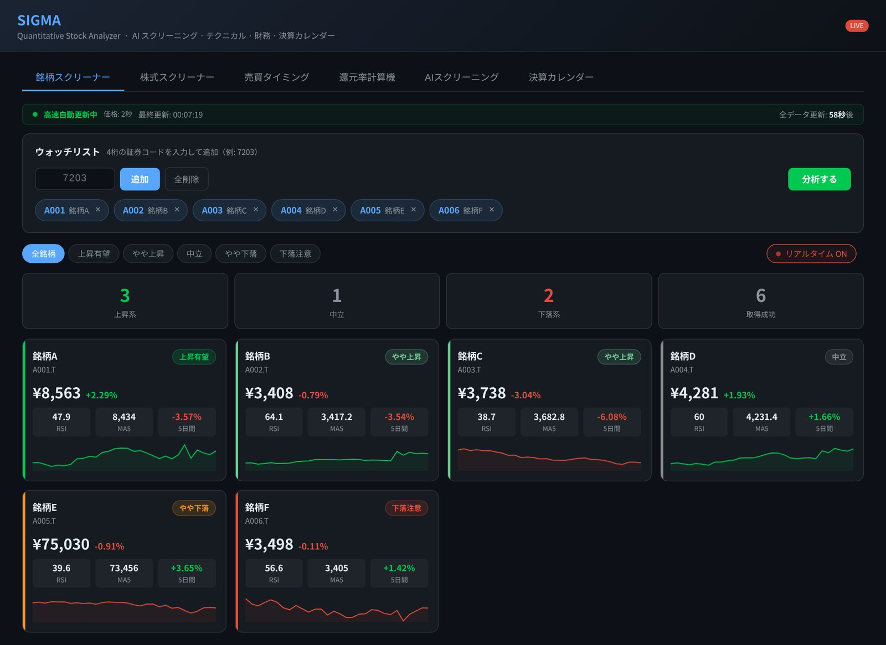
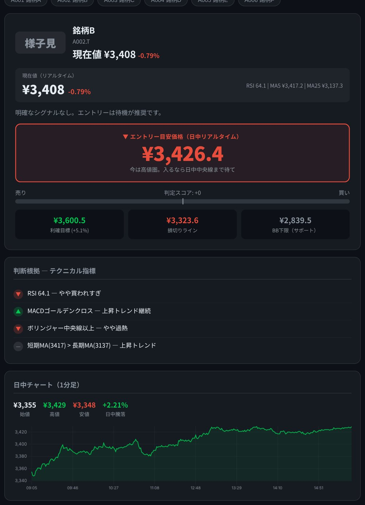
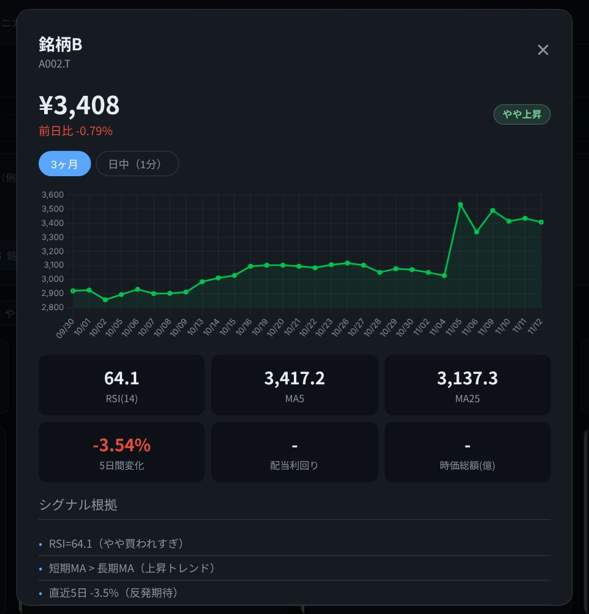
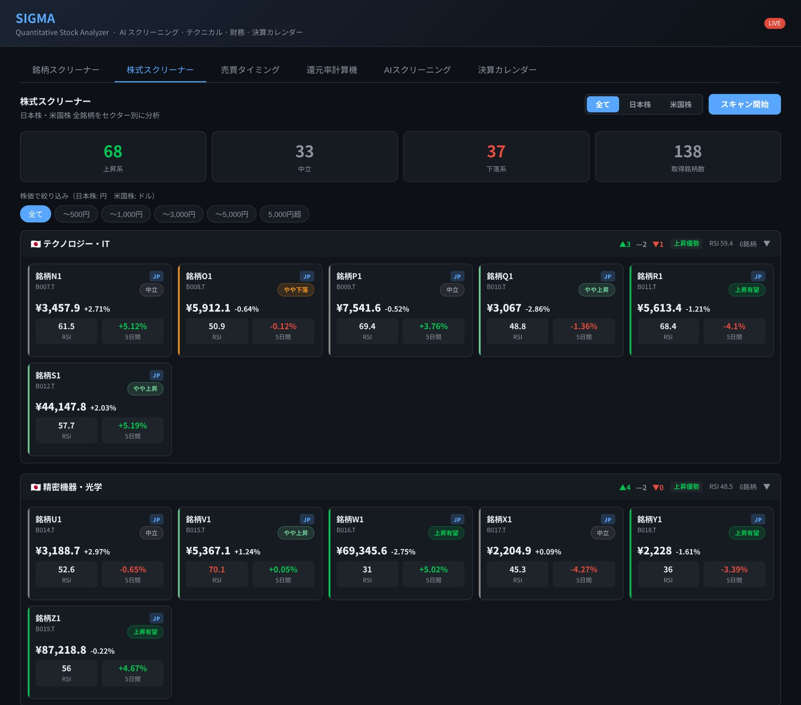
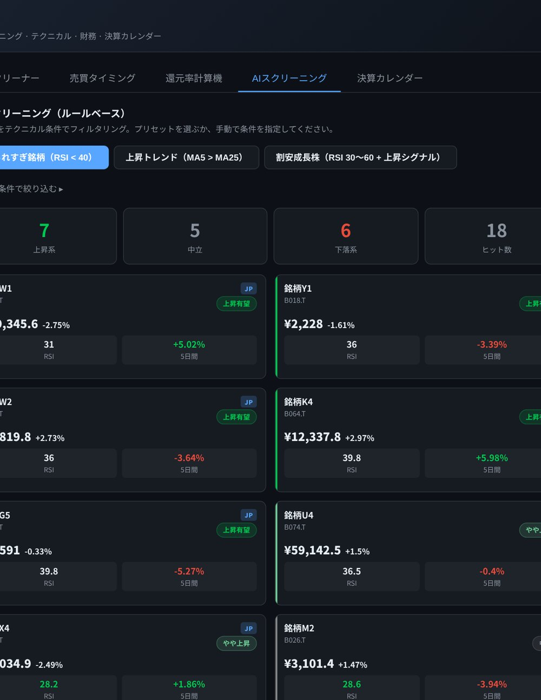
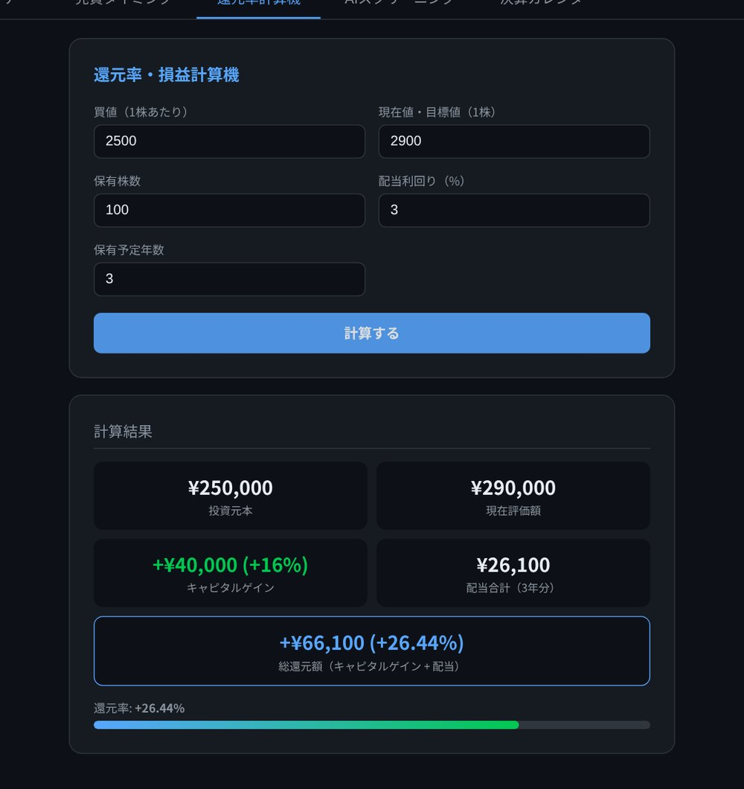

どの銘柄を買えば儲かるかを教えるツールではなく、利益を約束するものでも、投資助言でもありません。過去の値動きから計算したテクニカル指標を整理して、「なぜその判定なのか」という根拠を見える化するための分析ツールです。
表示される判定や価格は、過去のデータから機械的に計算した参考値です。将来の値動きを予測・保証するものではなく、判定どおりに売買しても損失が出ることは十分にあります。最終的な判断は、必ずご自身で行ってください。
RSIは「買い」、MACDは「様子見」。チャートを行き来して、結局どれを信じるか迷う。
買い時っぽいのは分かっても、指値・利確・損切りの価格は感覚任せになりがち。
ウォッチリスト、決算日、ニュース。毎日すべてを追いかける時間はない。
掲載画面はすべて実際のアプリです。銘柄名・コードは伏せ字にし、一部にデモデータを使用しています。
証券コードを追加して「分析する」を押すだけ。株価・RSI・MA5・5日騰落率と3ヶ月の値動きをカードで一覧化し、上昇系・中立・下落系の数を自動で集計します。リアルタイムONで15秒ごとに更新。


1銘柄を深く分析する画面です。判定（強い買い〜強い売り）に加え、エントリー目安・利確目標・損切りラインを価格で表示。日中は1分足のボリンジャーバンドで目安を更新し、緑・黄・赤で「今入れるか」を伝えます。
一覧のカードをクリックすると、3ヶ月チャートと日中1分足を切り替えて確認できます。RSI・MA5・MA25の値と、判定に使ったシグナルの理由もその場で表示。


「スキャン開始」で日本株・米国株をセクター単位で一括分析。全て／日本株／米国株の切り替えと、〜500円・〜1,000円…5,000円超の価格帯で絞り込めます。
「売られすぎ（RSI 40未満）」「上昇トレンド（MA5 > MA25）」「割安成長（RSI 30〜60＋上昇シグナル）」の3つのプリセットか、RSIの範囲とシグナルを手動で指定して、日本株全体から条件に合う銘柄を抽出します。


買値・現在値（目標値）・株数・配当利回り・保有年数を入れるだけで、キャピタルゲイン・配当合計・トータルリターンを計算。銘柄詳細から値を引き継ぐこともできます。
ウォッチリスト銘柄の決算発表予定日を一覧で確認（J-Quants）。
PER・ROE・EPS・年間配当・売上高・営業利益を銘柄ごとに表示。
最新ニュースの見出しをポジティブ／中立／ネガティブに分類。
開いたときにウォッチリスト銘柄のIRニュースと決算日をまとめて確認。
売買タイミング画面の判定ロジックです。ブラックボックスではなく、どの指標が何点を付けたかまで画面に表示します。
買い系は現在値。やや買いはBB下限・MA25・直近安値付近のうち高い方。様子見はそれらの低い方まで待つ設計です。
現在値×1.08 とボリンジャー上限のうち、高い方。
エントリー目安×0.95 とボリンジャー下限×0.97 のうち、低い方。
公開URLにアクセスするだけ。インストールは不要で、ブラウザですぐに使えます（Web版は公開準備中です）。
4桁の証券コードを追加。銘柄名は自動で取得されます。
判定・エントリー目安・損切りを見て、自分のルールで判断。
いいえ。SIGMAは「勝てる」と助言するツールではありません。利益を約束するものでも、投資助言でもありません。表示される判定や価格は、過去のデータから機械的に計算した参考値で、判定どおりに売買しても損失が出ることは十分にあります。判定は「考える材料のひとつ」として使い、最終的な判断は必ずご自身で行ってください。
日本株・米国株のテクニカル分析ツールです。RSI・MACD・ボリンジャーバンド・移動平均の4指標を点数化して売買の判定を出し、エントリー目安・利確目標・損切りラインを価格で表示します。
判定はラベルと色で表示され、判断に使った指標の理由も一緒に出るので、指標に詳しくなくても読み取れるように作っています。各指標の意味は同梱の「使い方ガイド」で確認できます。
RSI（14日）・MACD（12,26,9）・ボリンジャーバンド（20日,±2σ）・移動平均（MA5とMA25）をそれぞれ点数化して合計します。+5以上で「強い買い」、−5以下で「強い売り」など、合計点で7段階に判定します。配点はこのページの「判定ロジック」に全て載せています。
使っているロジックが異なります。一覧カードの判定（上昇有望〜下落注意）は、RSI・移動平均・直近5日の騰落率による簡易スコアです。売買タイミング画面の判定（強い買い〜強い売り）は、MACDとボリンジャーバンドも加えた詳細スコアです。そのため同じ銘柄でも表示が異なることがあります。
判定によって変わります。 ・強い買い／買い：現在値 ・やや買い：BB下限・MA25・直近安値付近のうち高い方（現在値以下） ・様子見：それらのうち低い方 ・売り系：BB下限か直近安値×0.98（新規の買いは非推奨の表示） 日中は1分足のボリンジャーバンドで目安を更新し、緑（今入れる）・黄（待つ）・赤（高値圏）で表示します。
いいえ、ルールベースです。RSIの範囲や移動平均の位置関係などの条件で、日本株の銘柄を自動で絞り込みます。条件が明確なので、なぜその銘柄が抽出されたのかを確認できます。
ニュース見出しに含まれる「増益」「上方修正」「下落」「懸念」などの語を数え、ポジティブ・中立・ネガティブに分類する簡易的な判定です。記事の内容を深く読み取るものではないため、参考情報としてご覧ください。
Yahoo Finance などの公開データを使っており、タイミングによって最大15〜20分程度の遅延が出る場合があります。リアルタイムONにすると15秒ごとに自動で取得し直します。東証の取引時間（9:00〜15:30）外は価格が動きません。
株価・チャートは Yahoo Finance（取得できない場合は Stooq）、財務データと決算予定日は J-Quants API、ニュースは Google News RSS、上場銘柄の一覧は JPX（日本取引所グループ）の公開データを使用しています。
ウォッチリストと売買タイミングは、4桁の証券コードで日本株を自由に追加できます。株式スクリーナーは日本株15セクター218銘柄と、米国株・ETF 8セクター73銘柄を収録しています。